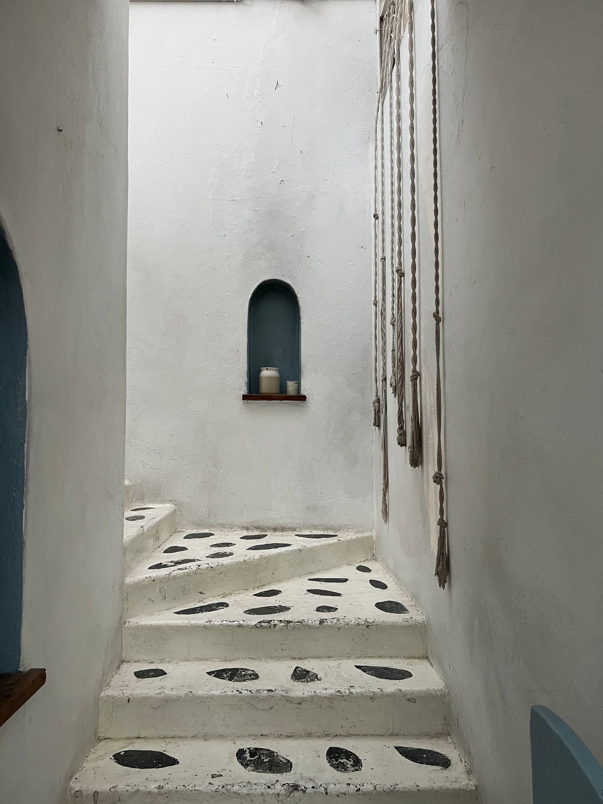
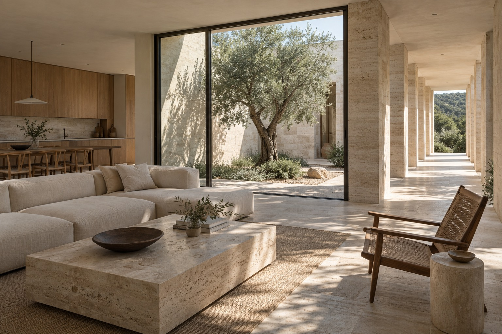

Projeyi incele ↗
Projeyi incele ↗İstanbul merkezli, bağımsız
bir mimarlık ve tasarım stüdyosu.
Kıyı Evi — Bodrum, 2026 ↗
ARES MİMARLIK
İstanbul · TürkiyeBiçimden önce
bir ilişki kuruyoruz.
Yerle, ışıkla, malzemeyle. Ve o mekânda yaşanacak hayatla.
Her projeyi kendi koşulları içinde ele alıyor; ihtiyaçları, çevreyi ve kullanım alışkanlıklarını tasarımın başlangıç noktası kabul ediyoruz.
Stüdyonun Düşüncesi ↗01 — SEÇİLİ PROJELER
Farklı bağlamlar.
Ortak bir düşünme biçimi.
Yaşama açılan
mekânlar.
Tüm Projeler ↗Projeyi incele ↗02
Mimarlık,
gündelik hayatın
sessiz çerçevesi.
 Projeyi incele ↗
Projeyi incele ↗

02 — STÜDYO
Bağımsız bir pratik.
Birlikte düşünme kültürü.

Azla kurulan,
çok şey anlatan.
Ares, farklı ölçeklerde mekân üretimi üzerine çalışan bağımsız bir tasarım stüdyosudur. Bir konutun planından bir kapı kolunun temasına kadar, bütünü ve detayı birlikte düşünür.
Hazır bir görsel dili tekrarlamak yerine, her projenin kendine ait sorularını ararız.
Stüdyoyu Tanıyın ↗BağlamIşıkMalzemeOranKullanımDetay
03 — HİZMETLER
İlk sorudan
son detaya.
Farklı ölçeklerde, aynı dikkatle.
Tasarımın bütün aşamalarında.
01Mimari Tasarım
Yapının yerle kurduğu ilişkiden plan kararlarına uzanan bütüncül bir çalışma.
Arsa ve çevre analizi, ihtiyaç programı, kütle çalışmaları ve mimari tasarım geliştirme.
02İç Mimarlık
Gündelik kullanımı, ışığı ve malzemeyi aynı düşüncenin parçası olarak ele alıyoruz.
İç mekân planlaması, malzeme seçimi, aydınlatma yaklaşımı ve özel mobilya tasarımı.
03Uygulama Projesi
Tasarım kararlarını, sahada karşılığı olan açık ve tutarlı detaylara dönüştürüyoruz.
Ölçülendirilmiş çizimler, sistem kesitleri, birleşim detayları ve disiplinler arası koordinasyon.
04Proje Danışmanlığı
Projenin erken kararlarından uygulama sürecine kadar bağımsız bir mimari bakış.
Mevcut proje değerlendirmesi, alan kullanımı, malzeme alternatifleri ve tasarım koordinasyonu.
05Mekânsal Dönüşüm
Mevcut olanın potansiyelini okuyor, yeni kullanımlara yer açıyoruz.
Yeniden işlevlendirme, plan düzenlemesi ve mevcut yapı karakterini koruyan müdahaleler.

MALZEMENİN HAFIZASI
Dokunulan.
Yaşanan. Kalan.
Taşın dokusu, ahşabın sıcaklığı, ışığın yüzeyde bıraktığı iz. Malzemeyi yalnızca görünüşüyle değil, zamanla nasıl değişeceğiyle birlikte seçiyoruz.
Malzemeye Bakışımız ↗